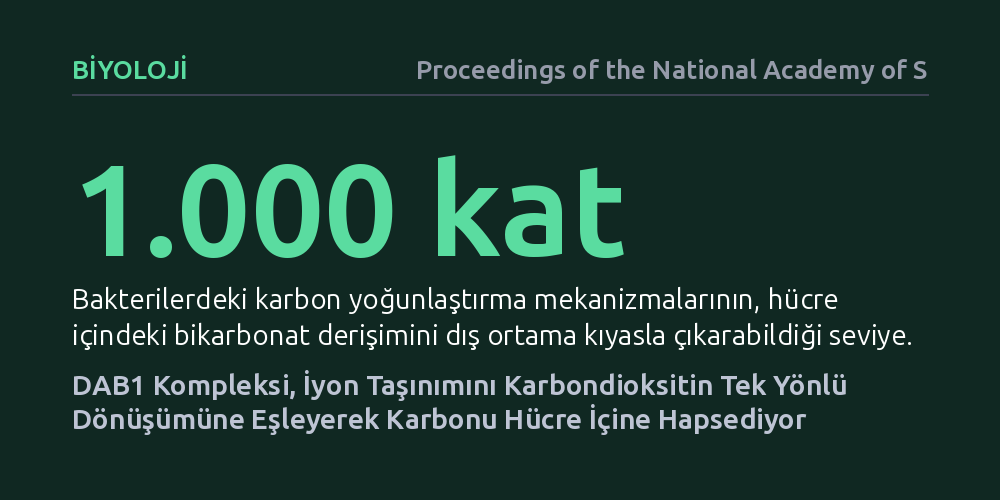

BIYOLOJI · Proceedings of the National Academy of Sciences · 2026-10-26
Araştırmacılar, bakterilerin karbondioksiti hücre içine nasıl pompaladığını anlamak için DAB1 protein kompleksinin krio-elektron mikroskobuyla yapısını inceledi. Çalışma, kompleksin iyon geçişiyle kimyasal dönüşümü birbirine bağlayarak karbondioksiti tek yönlü biçimde bikarbonat olarak hücre içine hapsettiğini ortaya koydu.
Bakterilerin karbondioksiti tek yönlü yakalama mekanizmasının yapısal olarak çözülmesi, bitkilerde fotosentez verimini artırma ve yeni nesil karbon yakalama teknolojileri geliştirme arayışlarına somut bir biyolojik model sunuyor.

Gezegenimizdeki birincil üretimin temeli, inorganik karbonun organik moleküllere dönüştürülmesine dayanır. Bu devasa kimyasal dönüşümün merkezinde Rubisco adlı enzim yer alır. Ne var ki Rubisco, evrimsel olarak son derece yavaş çalışan ve karbondioksit yerine zaman zaman ortamdaki oksijeni bağlayarak enerji israfına yol açan verimsiz bir katalizördür. Özellikle suda ve karbondioksitin seyrek olduğu ortamlarda yaşayan ototrof bakteriler, bu verimsizliğin üstesinden gelebilmek için hücresel karbon yoğunlaştırma mekanizmaları (CCM) geliştirmiştir.
Bu mekanizmaların temel hedefi, hücre içindeki çözünmüş karbon miktarını dış ortama kıyasla yüzlerce, hatta bin katına kadar çıkararak Rubisco'nun etrafını karbondioksit ile doyurmaktır. Ancak nötr ve yüksüz bir gaz olan karbondioksit, hücre zarından kolayca sızıp dışarı kaçabilir. Bakterilerin bu gazı hücreye çekip kaçmasını engellemek için nasıl bir moleküler kapana ve enerji aktarımına başvurduğu, biyofizik ve biyokimya dünyasının uzun süredir yanıt aradığı kritik bir soruydu.
Araştırmacılar, bakterilerde karbondioksitin hücre içine tek yönlü alınmasından sorumlu olan DAB1 protein kompleksinin gizemini çözmek için yapısal biyolojinin en gelişmiş araçlarından biri olan tek parçacık krio-elektron mikroskobuna (krio-EM) başvurdu. Hücre zarında gömülü halde bulunan bu karmaşık protein düzeneği saflaştırılarak sıvı etan içinde saniyenin kesirlerinde şok dondurmaya tabi tutuldu. Bu sayede proteinler, doğal çözelti hallerine en yakın biçimde ve amorf bir buz tabakası içinde sabitlendi.
Elektron mikroskobu altında binlerce farklı açıdan kaydedilen görüntüler, özel hareket düzeltme ve hizalama algoritmaları kullanılarak işlendi. Elde edilen iki boyutlu izdüşümler üç boyutlu uzayda birleştirilerek DAB1 kompleksinin atomik ve yarı-atomik çözünürlükteki üç boyutlu mimarisi ortaya çıkarıldı. Yapısal veriler, enzim kinetiği ve mutasyon deneyleriyle desteklenerek kompleksin hangi kısımlarının katalizden, hangi kısımlarının ise iyon geçişinden sorumlu olduğu test edildi.
Elde edilen üç boyutlu yapı, DAB1 kompleksinin zarda yer alan bir iyon taşıma kanalı ile sitoplazmaya bakan bir karbonik anhidraz enzim modülünü kusursuz bir mimariyle birleştirdiğini gösterdi. Hücre zarındaki elektrokimyasal potansiyel (iyon akışı), protein içerisindeki yapısal değişimleri tetikliyor ve dışarıdan giren karbondioksitin hızla bikarbonat iyonuna (HCO3−) dönüştürülmesini sağlıyor.
Bu dönüşümün en can alıcı noktası 'vektöryel', yani tek yönlü olmasıdır. Karbondioksit yüksüz bir molekül olduğu için hücre zarından serbestçe geçebilirken, elektrik yüklü bikarbonat iyonu lipit zardan kendi kendine geri kaçamaz. DAB1, karbondioksiti içeri çeker çekmez yüklü forma çevirip hücre içine hapsederek bir moleküler çekvalf gibi davranıyor. Böylece hücre içi bikarbonat derişimi dış ortamın bin katına kadar yükseltilebiliyor.
DAB1 kompleksinin atomik düzeydeki işleyişinin aydınlatılması, sadece bakteriyel fizyolojiyi anlamakla kalmıyor; küresel iklim ve gıda güvenliği krizlerine karşı da değerli bir biyolojik şablon sunuyor. Günümüzde kültür bitkilerinin fotosentez verimini artırmak isteyen sentetik biyologlar, bitki kloroplastlarına bakteriyel karbon yoğunlaştırma mekanizmalarını aktarmaya çalışıyor. DAB1'in kompakt yapısı ve enerji eşleşme prensibi, bu tür genetik mühendisliği projeleri için güçlü bir aday teşkil ediyor.
Bunun yanı sıra, endüstriyel baca gazlarından veya doğrudan atmosferden karbondioksit yakalamaya yönelik biyomimetik reaktörlerin tasarımında da DAB1'in mekanizmasından ilham alınabilir. Düşük enerjiyle gaz halindeki karbonu sıvı fazda iyonik olarak hapsetmeyi başaran bu doğal nano-makine, sürdürülebilir yeşil teknolojiler için somut bir yol haritası sağlıyor.